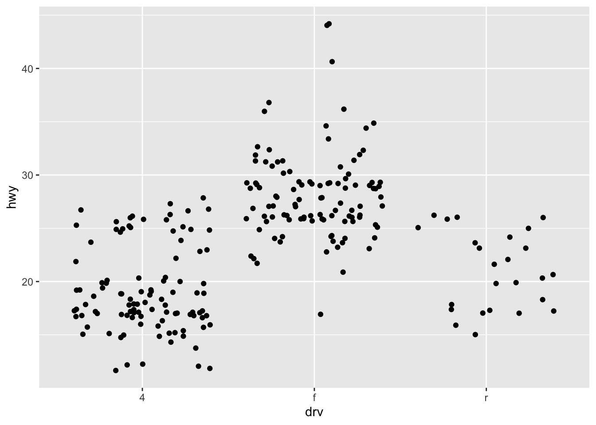
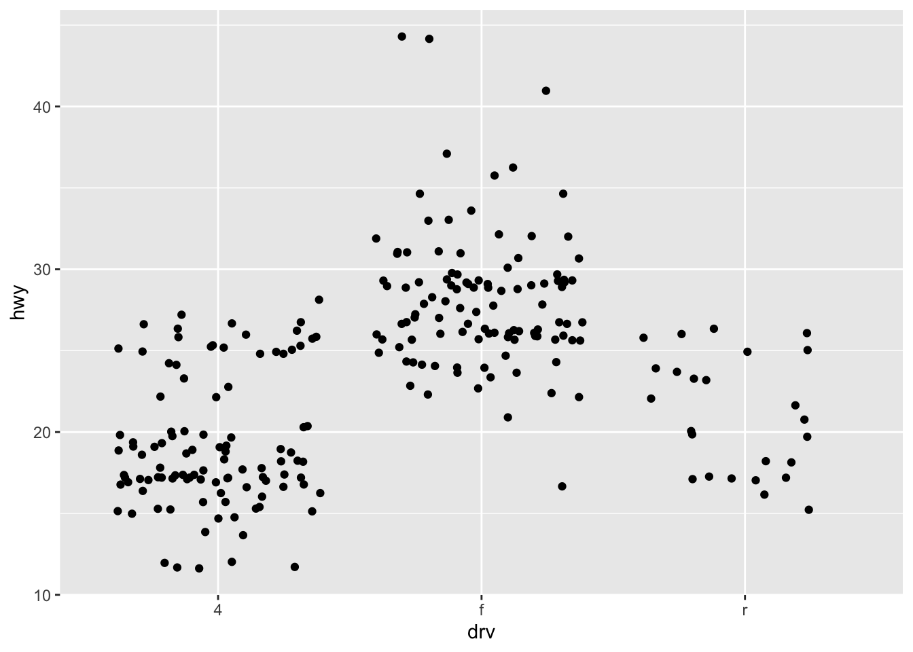

3.1 Data
As the foundation of every graphic, ggplot2 uses data to construct a plot. The system works best if the data is provided in a tidy format (we’re going to explorer it in the next section), which briefly means a rectangular data frame structure where rows are observations and columns are variables.
As the first step in many plots, you would pass the data to the ggplot() function, which stores the data to be used later by other parts of the plotting system. For example, if we intend to make a graphic about the mpg dataset, we would start as follows:
📌 Remember: Load the library before starting the analysis.
📘 Note: You can list all the data available in ggplot with tthe following command:
## # A tibble: 234 × 11
## manufacturer model displ year cyl trans drv cty hwy fl class
## <chr> <chr> <dbl> <int> <int> <chr> <chr> <int> <int> <chr> <chr>
## 1 audi a4 1.8 1999 4 auto(l… f 18 29 p comp…
## 2 audi a4 1.8 1999 4 manual… f 21 29 p comp…
## 3 audi a4 2 2008 4 manual… f 20 31 p comp…
## 4 audi a4 2 2008 4 auto(a… f 21 30 p comp…
## 5 audi a4 2.8 1999 6 auto(l… f 16 26 p comp…
## 6 audi a4 2.8 1999 6 manual… f 18 26 p comp…
## 7 audi a4 3.1 2008 6 auto(a… f 18 27 p comp…
## 8 audi a4 quattro 1.8 1999 4 manual… 4 18 26 p comp…
## 9 audi a4 quattro 1.8 1999 4 auto(l… 4 16 25 p comp…
## 10 audi a4 quattro 2 2008 4 manual… 4 20 28 p comp…
## # ℹ 224 more rows💡 Tip: You can use the command View to visualize the data. Try it yourself.
🧠 Advanced: DT package is an excellent option to explore the metadata! Try it yourself.
library(DT)
#Simple
datatable(head(mpg), class = 'cell-border stripe')
#Complex
DT::datatable(data = mpg, rownames = FALSE,
extensions = c('Buttons', 'Scroller'),
options = list(dom = 'Bfrtip', buttons = c('copy', 'csv'),
deferRender = TRUE, scrollX = T,
scrollX = T,
scrollY = 200,
scroller = TRUE,
caption = 'mpg metadata'))mpg includes information about the fuel economy of popular car models in 1999 and 2008, collected by the US Environmental Protection Agency
The variables are mostly self-explanatory:
cty and hwy record miles per gallon (mpg) for city and highway driving.
displ is the engine displacement in litres.
drv is the drivetrain: front wheel (f), rear wheel (r) or four wheel (4).
model is the model of car. There are 38 models, selected because they had a new edition every year between 1999 and 2008.
class is a categorical variable describing the “type” of car: two seater, SUV, compact, etc.
This dataset suggests many interesting questions.
How are engine size and fuel economy related? Do certain manufacturers care more about fuel economy than others? Has fuel economy improved in the last ten years? We will try to answer some of these questions, and in the process learn how to create some basic plots with ggplot2.

3.1.2 Mapping
The mapping of a plot is a set of instructions on how parts of the data are mapped onto aesthetic attributes of geometric objects. It is the ‘dictionary’ to translate tidy data to the graphics system.
A mapping can be made by using the aes() function to make pairs of graphical attributes and parts of the data. If we want the cty and hwy columns to map to the x- and y-coordinates in the plot, we can do that as follows:

3.1.3 Layers
The heart of any graphic is the layers. They take the mapped data and display it in something humans can understand as a representation of the data. Every layer consists of three important parts:
The geometry that determines how data are displayed, such as points, lines, or rectangles. The statistical transformation that may compute new variables from the data and affect what of the data is displayed. The position adjustment that primarily determines where a piece of data is being displayed.
A layer can be constructed using the geom_() and stat_() functions. These functions often determine one of the three parts of a layer, while the other two can still be specified. Here is how we can use two layers to display the cty and hwy columns of the mpg dataset as points and stack a trend line on top.
Here’s a simple example:

This produces a scatterplot defined by:
- Data:
mpg. - Aesthetic mapping: engine size mapped to x position, fuel economy to y position.
- Layer: points.
Pay attention to the structure of this function call: data and aesthetic mappings are supplied in ggplot(), then layers are added on with +.
⭐ Important: + is an important pattern to learn
This is an important pattern, and as you learn more about ggplot2 you’ll construct increasingly sophisticated plots by adding on more types of components.
Almost every plot maps a variable to x and y, so naming these aesthetics is tedious, so the first two unnamed arguments to aes() will be mapped to x and y.
This means that the following code is identical to the example above:

💡 Tip: Don’t forget that the first two arguments to aes() are x and y.
📘 Note: Note that we’ve put each command on a new line. We recommend doing this in your own code, so it’s easy to scan a plot specification and see exactly what’s there.
The plot shows a strong correlation: as the engine size gets bigger, the fuel economy gets worse.
There are also some interesting outliers: some cars with large engines get higher fuel economy than average.
❓ Question: WWhat sort of cars do you think they are?
3.1.4 Colour, size, shape and other aesthetic attributes
To add additional variables to a plot, we can use other aesthetics like colour, shape, and size
💡 Extra: ggplot2 accepts American and British spellings
These work in the same way as the x and y aesthetics, and are added into the call to aes():
aes(displ, hwy, colour = class)aes(displ, hwy, shape = drv)aes(displ, hwy, size = cyl)
ggplot2 takes care of the details of converting data (e.g., ‘f’, ‘r’, ‘4’) into aesthetics (e.g., ‘red’, ‘yellow’, ‘green’) with a scale.
There is one scale for each aesthetic mapping in a plot. The scale is also responsible for creating a guide, an axis or legend, that allows you to read the plot, converting aesthetic values back into data values. For now, we’ll stick with the default scales provided by ggplot2.
To learn more about those outlying variables in the previous scatterplot, we could map the class variable to colour:

This gives each point a unique colour corresponding to its class. The legend allows us to read data values from the colour, showing us that the group of cars with unusually high fuel economy for their engine size are two seaters: cars with big engines, but lightweight bodies.
If you want to set an aesthetic to a fixed value, without scaling it, do so in the individual layer outside of aes().
Compare the following two plots:


In the first plot, the value “blue” is scaled to a pinkish colour, and a legend is added.
In the second plot, the points are given the R colour blue.
This is an important technique and you’ll learn more about it in mapping
See vignette("ggplot2-specs") for the values needed for colour and other aesthetics.
Different types of aesthetic attributes work better with different types of variables.
💡 Tip: colour and shape work well with categorical variables, while size works well for continuous variables.
The amount of data also makes a difference: if there is a lot of data it can be hard to distinguish different groups. An alternative solution is to use faceting, as described next.
When using aesthetics in a plot, less is usually more. It’s difficult to see the simultaneous relationships among colour and shape and size, so exercise restraint when using aesthetics. Instead of trying to make one very complex plot that shows everything at once, see if you can create a series of simple plots that tell a story, leading the reader from ignorance to knowledge.
3.1.5 Exercises
Experiment with the colour, shape and size aesthetics. What happens when you map them to continuous values? What about categorical values? What happens when you use more than one aesthetic in a plot?
What happens if you map a continuous variable to shape? Why? What happens if you map
transto shape? Why?
3.1.6 Facets
Facets can be used to separate small multiples, or different subsets of the data. It is a powerful tool to quickly split up the data into smaller panels, based on one or more variables, to display patterns or trends (or the lack thereof) within the subsets.
The facets have their own mapping that can be given as a formula. To plot subsets of the mpg dataset based on levels of the drv and year variables, we can use facet_grid() as follows:


You might wonder when to use faceting and when to use aesthetics.
You’ll learn more about the relative advantages and disadvantages of each in group-vs-facet
3.1.7 Exercises
What happens if you try to facet by a continuous variable like
hwy? What aboutcyl? What’s the key difference?Use faceting to explore the 3-way relationship between fuel economy, engine size, and number of cylinders. How does faceting by number of cylinders change your assessement of the relationship between engine size and fuel economy?
Read the documentation for
facet_wrap(). What arguments can you use to control how many rows and columns appear in the output?What does the
scalesargument tofacet_wrap()do? When might you use it?
3.1.8 Coordinates - Plot geoms
You can view the coordinates part of the plot as an interpreter of position aesthetics. While typically Cartesian coordinates are used, the coordinate system powers the display of map projections and polar plots.
We can also use coordinates to display a plot with a fixed aspect ratio so that one unit has the same length in both the x and y directions. The coord_fixed() function sets this ratio automatically.

You might guess that by substituting geom_point() for a different geom function, you’d get a different type of plot.
That’s a great guess!
In the following sections, you’ll learn about some of the other important geoms provided in ggplot2. This isn’t an exhaustive list, but should cover the most commonly used plot types.
geom_smooth()fits a smoother to the data and displays the smooth and its standard error.geom_boxplot()produces a box-and-whisker plot to summarise the distribution of a set of points.geom_histogram()andgeom_freqpoly()show the distribution of continuous variables.geom_bar()shows the distribution of categorical variables.geom_path()andgeom_line()draw lines between the data points. A line plot is constrained to produce lines that travel from left to right, while paths can go in any direction. Lines are typically used to explore how things change over time.
3.1.9 Adding a smoother to a plot
If you have a scatterplot with a lot of noise, it can be hard to see the dominant pattern.
In this case it’s useful to add a smoothed line to the plot with geom_smooth():
## `geom_smooth()` using method = 'loess' and formula = 'y ~ x'
This overlays the scatterplot with a smooth curve, including an assessment of uncertainty in the form of point-wise confidence intervals shown in grey.
If you’re not interested in the confidence interval, turn it off with geom_smooth(se = FALSE).
An important argument to geom_smooth() is the method, which allows you to choose which type of model is used to fit the smooth curve:
method = "loess", the default for small n, uses a smooth local regression (as described in?loess).The wiggliness of the line is controlled by the
spanparameter, which ranges from 0 (exceedingly wiggly) to 1 (not so wiggly).## `geom_smooth()` using method = 'loess' and formula = 'y ~ x'
## `geom_smooth()` using method = 'loess' and formula = 'y ~ x'
Loess does not work well for large datasets (it’s \(O(n^2)\) in memory), so an alternative smoothing algorithm is used when \(n\) is greater than 1,000.
method = "gam"fits a generalised additive model provided by the mgcv package.You need to first load mgcv, then use a formula like
formula = y ~ s(x)ory ~ s(x, bs = "cs")(for large data).This is what ggplot2 uses when there are more than 1,000 points.
library(mgcv) ggplot(mpg, aes(displ, hwy)) + geom_point() + geom_smooth(method = "gam", formula = y ~ s(x))
method = "lm"fits a linear model, giving the line of best fit.## `geom_smooth()` using formula = 'y ~ x'
method = "rlm"works likelm(), but uses a robust fitting algorithm so that outliers don’t affect the fit as much. It’s part of the MASS package, so remember to load that first.
3.1.10 Boxplots and jittered points
When a set of data includes a categorical variable and one or more continuous variables, you will probably be interested to know how the values of the continuous variables vary with the levels of the categorical variable.
Say we’re interested in seeing how fuel economy varies within cars that have the same kind of drivetrain.
We might start with a scatterplot like this:

Because there are few unique values of both drv and hwy, there is a lot of overplotting.
Many points are plotted in the same location, and it’s difficult to see the distribution.
There are three useful techniques that help alleviate the problem:
Jittering,
geom_jitter(), adds a little random noise to the data which can help avoid overplotting.Boxplots,
geom_boxplot(), summarise the shape of the distribution with a handful of summary statistics.Violin plots,
geom_violin(), show a compact representation of the “density” of the distribution, highlighting the areas where more points are found.
These are illustrated below:


Each method has its strengths and weaknesses. Boxplots summarise the bulk of the distribution with only five numbers, while jittered plots show every point but only work with relatively small datasets. Violin plots give the richest display, but rely on the calculation of a density estimate, which can be hard to interpret.
For jittered points, geom_jitter() offers the same control over aesthetics as geom_point(): size, colour, and shape.
For geom_boxplot() and geom_violin(), you can control the outline colour or the internal fill colour.
3.1.11 Histograms and frequency polygons
Histograms and frequency polygons show the distribution of a single numeric variable. They provide more information about the distribution of a single group than boxplots do, at the expense of needing more space.
## `stat_bin()` using `bins = 30`. Pick better value with `binwidth`.
## `stat_bin()` using `bins = 30`. Pick better value with `binwidth`.
Both histograms and frequency polygons work in the same way: they bin the data, then count the number of observations in each bin. The only difference is the display: histograms use bars and frequency polygons use lines.
You can control the width of the bins with the binwidth argument (if you don’t want evenly spaced bins you can use the breaks argument).
It is very important to experiment with the bin width.
The default just splits your data into 30 bins, which is unlikely to be the best choice.
You should always try many bin widths, and you may find you need multiple bin widths to tell the full story of your data.


An alternative to the frequency polygon is the density plot, geom_density().
A little care is required if you’re using density plots: compared to frequency polygons they are harder to interpret since the underlying computations are more complex.
They also make assumptions that are not true for all data, namely that the underlying distribution is continuous, unbounded, and smooth.
To compare the distributions of different subgroups, you can map a categorical variable to either fill (for geom_histogram()) or colour (for geom_freqpoly()).
It’s easier to compare distributions using the frequency polygon because the underlying perceptual task is easier.
You can also use faceting: this makes comparisons a little harder, but it’s easier to see the distribution of each group.


3.1.12 Theme
The theme system controls almost any visuals of the plot that are not controlled by the data and is therefore important for the look and feel of the plot. You can use the theme for customizations ranging from changing the location of the legends to setting the background color of the plot. Many elements in the theme are hierarchical in that setting the look of the general axis line affects those of the x and y axes simultaneously.
To tweak the look of the plot, one can use many of the built-in theme_() functions and/or detail specific aspects with the theme() function. The element_() functions control the graphical attributes of theme components.
ggplot(mpg, aes(cty, hwy, colour = class)) +
geom_point() +
theme_minimal() +
theme(
legend.position = "top",
axis.line = element_line(linewidth = 0.75),
axis.line.x.bottom = element_line(colour = "blue")
)
3.1.13 Combining
As mentioned at the start, you can layer all of the pieces to build a customized plot of your data, like the one shown at the beginning of this vignette:
ggplot(mpg, aes(cty, hwy)) +
geom_point(mapping = aes(colour = displ)) +
geom_smooth(formula = y ~ x, method = "lm") +
scale_colour_viridis_c() +
facet_grid(year ~ drv) +
coord_fixed() +
theme_minimal() +
theme(panel.grid.minor = element_blank())